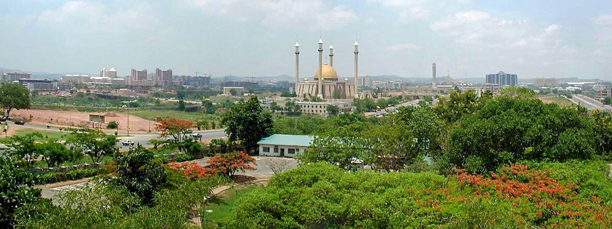
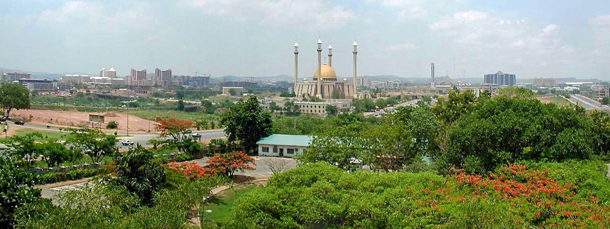

The Federal Republic of Nigeria, commonly referred to as Nigeria is a country in West Africa, bordering Benin in the west, Chad and Cameroon in the east, and Niger in the north. Its coast in the south is located on the Gulf of Guinea in the Atlantic Ocean. The federal republic comprises 36 states and the Federal Capital Territory,where the capital, Abuja is located. Nigeria is officially a democratic secular country.
Nigeria is often referred to as the "Giant of Africa", owing to its large population and economy. With 186 million inhabitants, Nigeria is the most populous country in Africa and the seventh most populous country in the world. As of 2015, Nigeria is the world's 20th largest economy, worth more than $500 billion and $1 trillion in terms of nominal GDP and purchasing power parity respectively. It overtook South Africa to become Africa's largest economy in 2014. The 2013 debt-to-GDP ratio was 11 percent. Nigeria is considered to be an emerging market by the World Bank; it has been identified as a regional power on the African continent, a middle power in international affairs, and has also been identified as an emerging global power.

 
